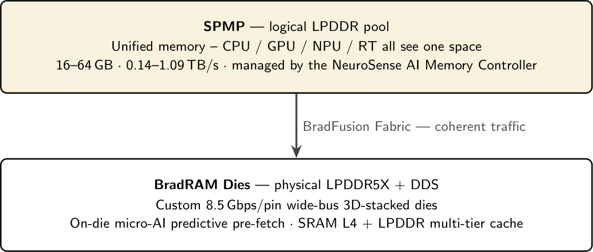

The definitive reference is the BRAD_DEVICES_COMPLETE_SPEC.md compendium — 1,689 lines across the whole ecosystem, written and kept current by me. It consolidates 52 per-subsystem documents and opens today — it is the paper trail everything on this site points to.
The one book. Parts 0–10 + appendices: ecosystem blueprint, CPU, GPU, NPU, memory & storage, OS, compute/software, console & products, company, roadmap — with honest Gen 1 / Gen 2 / Vision tagging and a source-of-truth directory tree.
Every PDF now wears the brand — gold-dark rules, the official wordmark, and register-level diagrams drawn in one shared TikZ style. Download the set:
The GPU architecture — three pipelines drawn as stage diagrams.
The ISA — real bit-field figures for RRR / RI / BR / JMP.
The vector ISA v2 — 16-bit compressed layout + 256-bit VSET lanes.
BradXon Gen 1 platform — address-layout bands, MMIO, ANF fabric governor.
The full product line — brand-hierarchy tree + software portfolio.
Whitespace vs the giants — the software moat line is shipped.
Core-by-core vs the incumbent — benchmark tables, honest rows.

GPU pipeline. The six stages every BradVector core runs — drawn as numbered stage diagrams.

NPU topology. The 2×4 NCC mesh, HB-AIM, scheduler and fabric — §3.2 of the book.

Memory. BradRAM + SPMP — the two-tier unified pool, §4.1 of the book.
Every subsystem has a deep-dive. A selection:
The BradVector instruction set — the ISA every Torox GPU shares.
Torox microarchitecture, die naming and the Torox G1 die registry.
Compute model — kernels, warps, scheduling, shared memory.
The stable host-facing surface: compile → pack → session → launch → run → inspect → breakpoints. One C header, one implementation, exposed 1:1 to the browser via site/js/bradvector.js.
The software platform & strategy — why the toolchain is the moat.
SoC platforms, boards, cooling, memory modules.
Memory die, unified pool, power/security/timing deep-dives.
The operating system across Mobile–Compute editions.
The console — a Torox GPU in a box, with the Nexus controller.
The Python-first AI weapon — import tifa: one-line optimize(), AutoNeuroStream partition (BNV/BVX/BFX), MoE expert spooler, exact FP8/FP4/INT4 digit formats. Stdlib-only, runnable today.
The cloud-service developer surface — REST spec plus stdlib-only reference server: BradID auth, BradMail, BradHub, BradPay ledger, BradCloud, BradNotify, BradGeo.
The reference developer CLI — braddev cvt / run / dbg / gpu info / gpu top / timeline / test built on the real shipped stack (bradc → .bvbc → BVRT → BradTimeline/bradgdb) plus the SPMP/EROE/Fabric drivers. All self-checks pass; saxpy & fib run breathable kernels end-to-end.